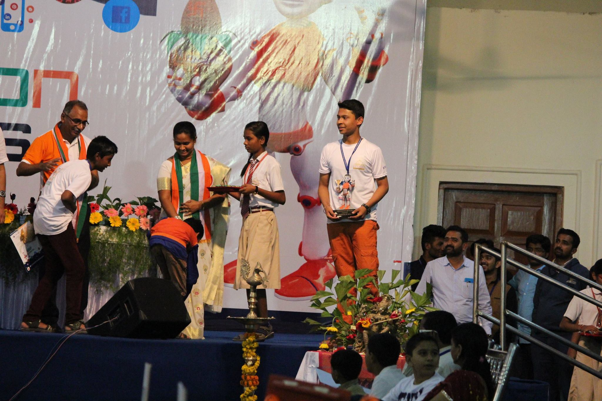

In News : 15'Feb 2016 NavBharat@Nagpur
Winners of Robocon Junior India 2016 Event held in MIT Vishwashanti Gurukul School at Pandharpur Maharashtra on date 22' and 23' January 2016.
In this event, students of Gayatri Convent, 310 E New Nandanvan Nagpur won 1st prize of 16000/-Rs (with Trophy) and 3rd prize of 5000/-Rs (with Trophy) by the hands Dr S.N. Saha (IIT Kharagpur) and Swati Karad (Director) in "Make In India Theme".
